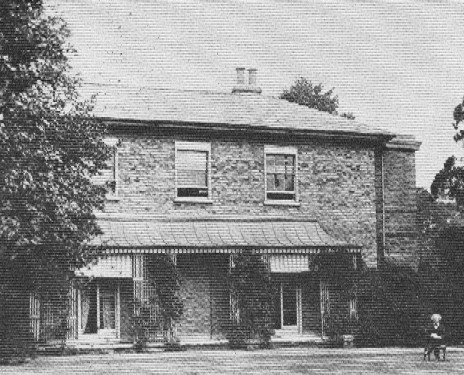

London, England
1896-1900
"...he is the only unroyal outsider whose arrival in London can compete for attention with an eclipse."
Mark Twain, Following the Equator
"Dollis Hill House"
1900

picture courtesy of Mark Twain
"There
is no
suggestion of city here; it is country, pure and simple, and is as
still and reposeful as is
the bottom
of the sea...Dollis Hill comes nearer to being a paradise than any other home I ever occupied." letter to Joseph
Twitchell, 6.12.1900, London, England, as quoted in Summer in Paradise

of the sea...Dollis Hill comes nearer to being a paradise than any other home I ever occupied." letter to Joseph
Twitchell, 6.12.1900, London, England, as quoted in Summer in Paradise
Back to Florence | On to Riverdale